Маджонг: что дорисовать
Лист для Ани, 09.09.2026. Что уже стоит в игре - на странице статуса. Здесь только то, чего ещё нет, с точными размерами и картинкой, как оно выглядит сейчас.
Как отдавать, чтобы встало с первого раза
- Один элемент - один PNG на прозрачном фоне. Не экраны, не коллажи.
- Имя файла как в этом листе. По имени файл находит свою ячейку сам. Одна опечатка - файл теряется.
- Размер подгонять не надо, пропорцию надо. Впишем сами. Но если ячейка 419x3, а рисунок квадратный, он не влезет.
- Никакого текста в картинках. Текст рисует игра, языков три, числа живые.
- Файлом, не фотографией. Телеграм жмёт фото и убивает прозрачность.
- Рамки окон - особый случай, смотри раздел про растягивание ниже.
Что физически нельзя: добавить в игру новый объект (панду на окно, ветки над рамкой) или сдвинуть существующий. Меняется только картинка внутри уже существующего места.
Главное, по порядку
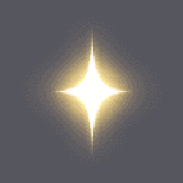
так сейчас
Звезда за уровень, маленькая.
Где видно: экран победы.
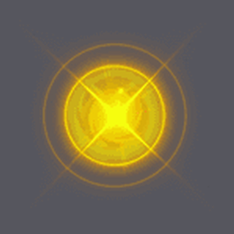
так сейчас
Звезда за уровень, большая, с сиянием.
Где видно: экран победы.
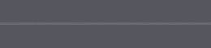
так сейчас
Отрезок линии. Из него игра складывает сетку доски и линию, которой соединяет две плитки. Тонкий, 3 пикселя в высоту.
Где видно: уровень, между плитками и при снятии пары.
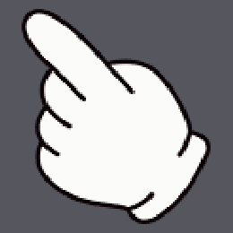
так сейчас
Маленькая рука-указатель.
Где видно: обучение на первом уровне.
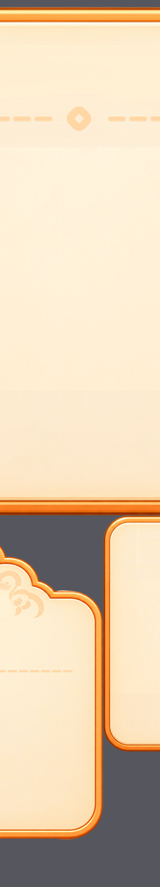
так сейчас
Полупрозрачная подложка под доской, лёгкое затемнение поля. Растягивается на весь экран.
Где видно: уровень.
Где это на экране
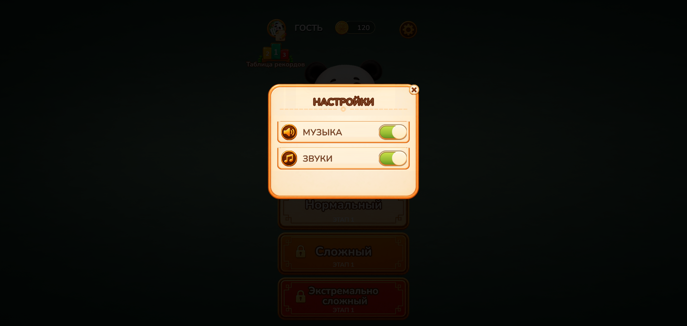
Окно настроек: шапка сверху пока прежняя, квадратики чекбоксов - тоже
Таблица рекордов: оранжевые строки и шапка - из растягиваемых кадров

Уровень: сетка между плитками из отрезка qipanxianduan

Меню: здесь уже всё твоё
Рамки окон и полосы: как их растягивает игра
Эти картинки движок хранит маленькими и растягивает до нужного размера. Углы и края он не трогает, а середину тянет. Поэтому рисовать надо ровно в размер из листа, весь узор держать в углах и по краям, а середину оставлять ровной заливкой. На схемах красным показано, что именно растянется.
Строка соперника в таблице рекордов, короткая.
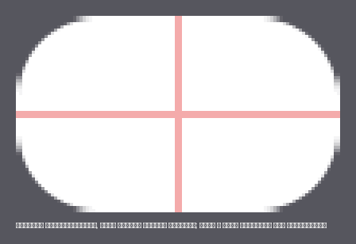
Строка соперника, длинная.
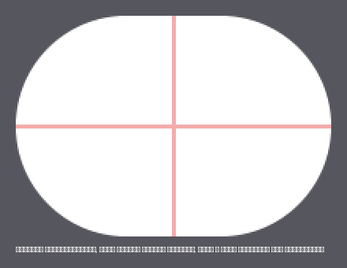
Подложка полосы прогресса.
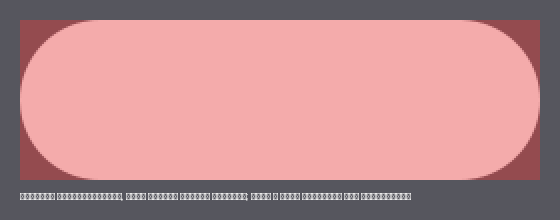
Дорожка полосы прогресса.
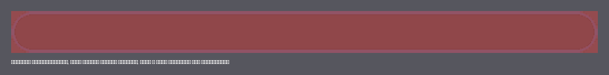
Дорожка полосы прогресса, тонкая.
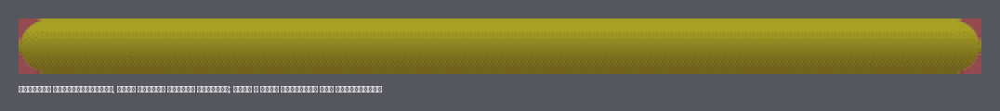
Белая плашка. Цвет ей задаёт игра, рисуется только форма.
Белая плашка.
Белая плашка.
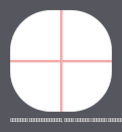
Белая плашка побольше.
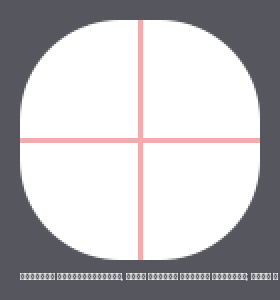
Белая плашка, тянется только по бокам.
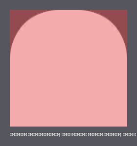
Мелочь
Маленькие кадры, каждый виден недолго. Делать после главного.
| файл | размер | что это | сейчас |
|---|---|---|---|
| 0.png | 158x158 | белое свечение под выделенной плиткой | 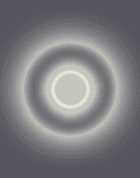 |
| yuan1.png | 95x91 | бежевая плашка-подложка | 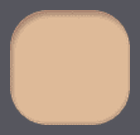 |
| butbut2.png | 595x181 | оранжевая плашка, второе состояние большой кнопки | 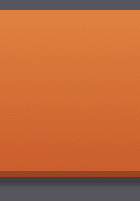 |
| red.png | 60x67 | розовая точка-уведомление | 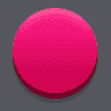 |
| sign3.png | 49x78 | знак вопроса | |
| suo.png | 49x39 | ключик | 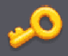 |
| progressimg1.png | 260x80 | белая пилюля под полосу прогресса | 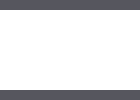 |
| yuan40_2_1.png | 100x66 | белая плашка с плоским низом | 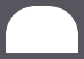 |
| yuan40_2_12.png | 100x66 | белая плашка с плоским низом | |
| yuan501_12.png | 120x120 | белая плашка | 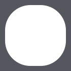 |
| yuan502_1.png | 120x120 | белая плашка | 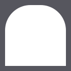 |
| yuan502_12.png | 120x120 | белая плашка | |
| shengjiduanwei.png | 246x246 | сияние при повышении ранга |
Рисовать не надо
| что | почему |
|---|---|
| окно «Тема» целиком | the1, the2, the3, them1, them2, thed, thedi, thedi2, choose1, choose2 - кнопку убрали, набор плиток один |
| третий набор плиток | 60 граней «Милый» - набор убран из игры |
| bg1_1 | кромка полки, в игре выключена |
| шапка окна dialog_top | окна теперь без шапки, как в твоих мокапах: заголовок внутри панели |
| but_set, bg_addGame, tou1, sign4 | кнопка «Вид» скрыта вместе со своей строкой; остальные три заняты твоими тумблером и иконками настроек |
| pai_di, pai_di2, qipandi1 | почти прозрачные подложки под плиткой, их не видно |
Из присланного не встанет, и почему
| файл | причина |
|---|---|
| win | панда для окна победы - в окне нет отдельного места под картинку над рамкой |
| overbg_1, overbg_2 | лавровые ветки - места под них нет |
| sub_1 | панель с выступом под панду - в игре один тип панели на все окна, он собран из sub |
| bg_1, bg_1920x1080 | горизонтальные фоны - игра вертикальная, сукно уже твоё |
| grade_1 | не нашёл, к чему это |
Всё остальное из твоих файлов уже в игре: плитки все 55, аватарки все 15, панели окон, кнопки, иконки, медали, кольца, галочки, сукно, панда в меню, плашка внизу, бамбук, тумблеры и иконки в настройках (собраны из твоих пилюль, кнопки и круглых иконок).